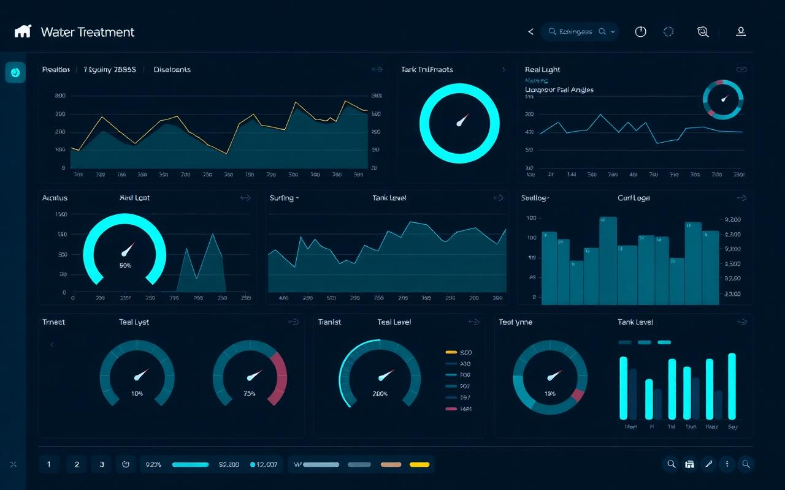
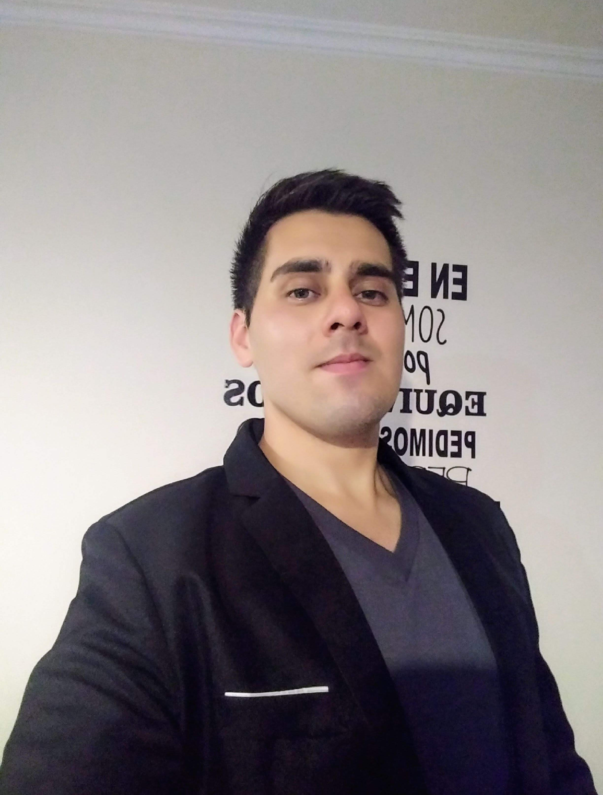
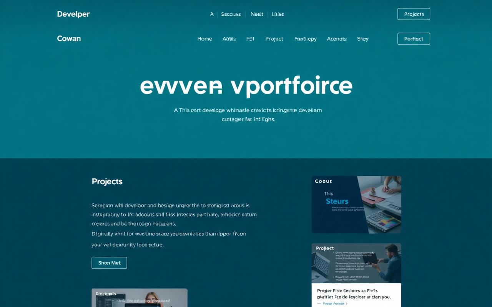

Dashboard SCADA en vivo
HMI industrial que simula el monitoreo en tiempo real de una planta potabilizadora: turbidez, cloración, caudal, bombas, filtros y log de alarmas. Construido con JavaScript puro, sin dependencias.
Operador de Planta Dev Industrial
+8 años operando plantas potabilizadoras con SCADA. Formación Full Stack en Java, Angular y Python para construir las herramientas que la industria necesita y aún no tiene.

No soy junior. Tengo ocho años haciendo que el agua funcione.
Operé plantas potabilizadoras de escala urbana en Aguas Cordobesas S.A. (Argentina) durante más de ocho años: turnos rotativos 24/7, SCADA, alarmas en plena madrugada, análisis físico-químicos en laboratorio y decisiones de dosificación que no admiten error.
Mi lado tech no es decorativo. Estudié Desarrollo Web Full Stack y Biotecnología para cerrar el ciclo — entender la planta y construir el software que la monitorea, la registra y la gestiona. El gap entre el operador y el desarrollador soy yo.
Actualmente en Zaragoza, NIE en regla, carnet B. Apuntando a Veolia, SAICA, Stellantis y sector medioambiental en zonas PLAZA / Utebo / Malpica.
Fusión de telemetría industrial en tiempo real y arquitectura de software moderna.

HMI industrial que simula el monitoreo en tiempo real de una planta potabilizadora: turbidez, cloración, caudal, bombas, filtros y log de alarmas. Construido con JavaScript puro, sin dependencias.

Portfolio técnico con 5 módulos interactivos: simulador Jar-test, análisis fotométrico de aluminio, determinación de amonio, balance logístico de reactivos y panel de contralavado de filtros.